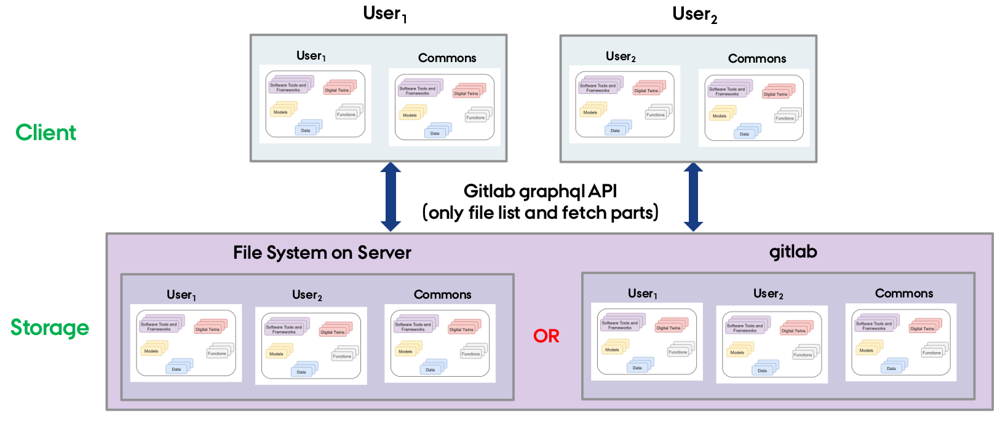

Host Library Microservice
The lib microservice is a simplified file manager providing graphQL API. It has three features:
- provide a listing of directory contents.
- transfer a file to user.
- Source files can either come from local file system or from a gitlab instance.
The library microservice is designed to manage and serve files, functions, and models to users, allowing them to access and interact with various resources.
This document provides instructions for running a stand alone library microservice.
Setup the File System
The users expect the following file system structure for their reusable assets.

There is a skeleton file structure in DTaaS codebase. You can copy and create file system for your users.
Gitlab setup (optional)
For this microserivce to be functional, a certain directory or gitlab project structure is expected. The microservice expects that the gitlab consisting of one group, DTaaS, and within that group, all of the projects be located, user1, user2, ... , as well as a commons project. Each project corresponds to files of one user. A sample file structure can be seen in gitlab dtaas group. You can visit the gitlab documentation on groups for help on the management of gitlab groups.
You can clone the git repositories from the dtaas group to get a sample file system structure for the lib microservice.
Setup Microservice
To set up the lib microservice, follow these steps:
Download the lib-microservice.zip from the releases page.
Configuration setup
The microservices uses .env environment files to receive configuration.
To set up the environment variables for the lib microservice, create a new file named .env in the lib-ms directory. Then, add the following variables and their respective values. Below you can see and how, with included examples:
The LOCAL_PATH variable is the absolute filepath to the location of the local directory which will be served to users by the Library microservice.
The GITLAB_URL, GITLAB_GROUP and TOKEN are only relevant for gitlab mode. The TOKEN should be set to your GitLab Group access API token. For more information on how to create and use your access token, gitlab page.
Once you've generated a token, copy it and replace the value of TOKEN with your token for the gitlab group, can be found.
Replace the default values the appropriate values for your setup.
NOTE:
- When _MODE=local, only LOCAL_PATH is used. Other environment variables are unused.
- When MODE=gitlab, GITLAB_URL, TOKEN, and GITLAB_GROUP are used; LOCAL_PATH is unused.
Start Microservice
You can press Ctl+C to halt the application. If you wish to run the microservice in the background, use
The lib microservice is now running and ready to serve files, functions, and models.
Users can access the library microservice at URL: http://localhost:<PORT>/lib.
Developer Commands
Service Endpoint
The URL endpoint for this microservice is located at: localhost:PORT/lib